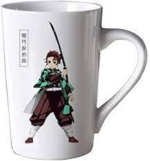

tasse kny
Demon Slayer, connue au Japon sous le nom Kimetsu no yaiba est une série de manga écrite et dessinée par Koyoharu Gotōge. L'histoire suit le périple de Kamado Tanjirō qui cherche un moyen de rendre à nouveau humaine sa petite sœur Nezuko après sa transformation en démon. cette tasse permet de boire ce qui est incroyable genre s'hydrater est important dans la vie.